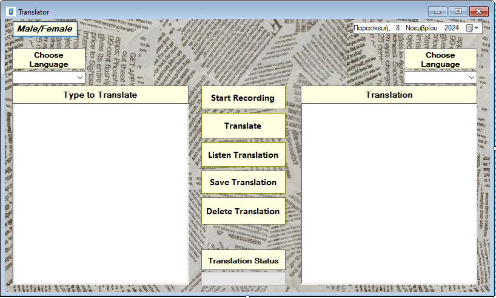
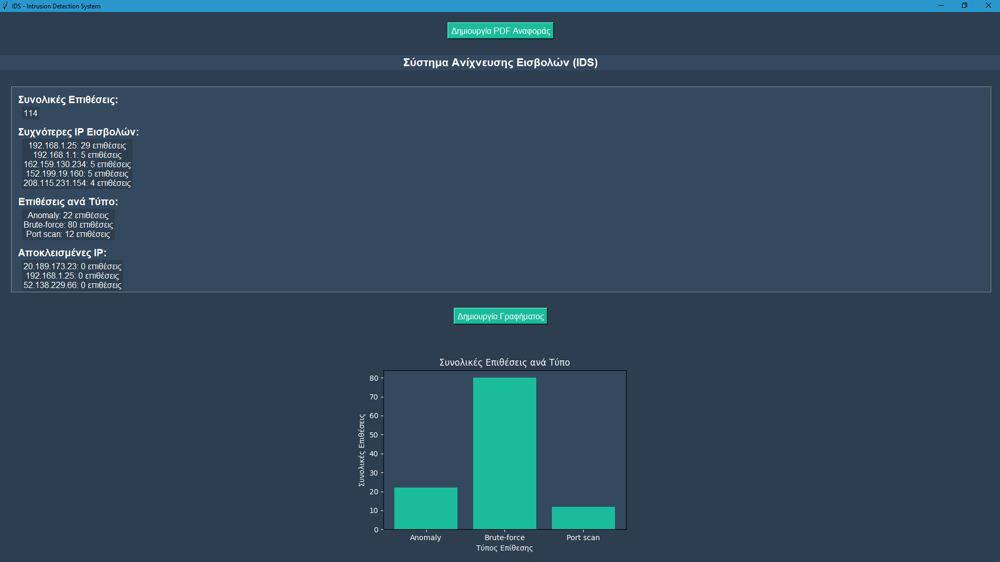
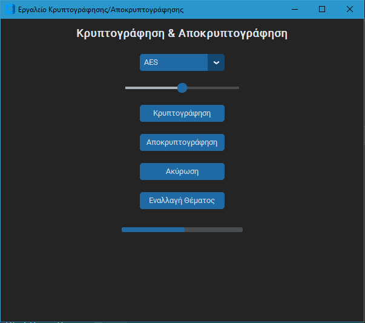

PROJECT MENU
Network Manager

This project is a Network Manager application that allows the user to monitor and manage network and VPN connections on their computer.
The application is written in C# and uses the Windows Forms library for the graphical user interface (GUI).
Following is a detailed description of the functions and features of the application:
- Real-time status display of the network and VPN.
- Enable/disable network or VPN with button presses.
- Refresh available networks or connect to a specific VPN through the GUI.
- Log file for recording all actions and changes.
Network Details: The project can display details about the network status, such as encryption type (e.g., WPA2), speed (download/upload), and number of connected devices.
Automatic Network Refresh: The application can automatically refresh the list of available networks every few seconds.
Monitoring Features:
- Connected Network Name: Displays the name of the connected network.
- Connection Duration Monitoring: Shows duration of network and VPN connections.
- Connection Status Updates: Labels display the current status with color-coded feedback.
- Automatic Notifications: On-screen notifications for network or VPN status changes.
Basic Functions:
- Enable/Disable Network: Toggle network status with visual feedback.
- Connect/Disconnect VPN: Button control with visual notifications for VPN status.
- Available Networks: View all Wi-Fi networks and refresh the list.
- Ping and Speed Monitoring: Shows ping and speed status.
- Automatic Network Switching: Monitors network availability and switches if disconnected.
- Network Reconnect: Attempts to reconnect if the network connection is lost.
Organizer

This project is a task management application (ToDo List) that allows users to create, manage, and track their tasks. The application offers cloud synchronization features, supporting multiple users with secure Firebase authentication. Users can log in, sync their tasks to the cloud, and receive notifications for upcoming deadlines.
Application Features
Task Management:
- Users can create, delete, and edit tasks.
- Tasks include fields like Task Name, Date and Time, and Priority (High, Medium, Low).
- Tasks are stored locally and can be synced with the cloud.
Cloud Sync (Firebase Firestore):
- Sync all tasks to the cloud, allowing access from different devices.
- A Sync button for synchronizing and a Refresh button for refreshing tasks from the cloud.
Multi-User and Authentication (Firebase Authentication):
- Users can log in with their email and password, ensuring they only see their tasks.
- Login and Logout buttons are available for user management.
- Each user has a separate account and data.
Deadline Notifications:
- Notifications are displayed when a task is approaching its deadline (10 minutes before).
- Notifications appear as messages and sounds (Beep), alerting users to complete their tasks.
Log File for Action Tracking:
- The application logs all main actions (e.g., adding, deleting tasks, syncing, logging in) to a log file for tracking user actions.
Technical Features
Platform:
- Windows Forms Application (.NET Framework) in C#.
Tools and Libraries:
- FirebaseAdmin and Google.Apis.Auth for Firebase integration (Authentication and Firestore).
- System.IO for file management and log tracking.
Requirements:
- .NET Framework 4.6.1 or newer.
- Firebase project to support Firestore and Authentication.
- Service account key file (JSON) from Firebase Console for Firestore integration.
Button Functions:
- Sync Button: Synchronize local tasks with Firestore.
- Login Button: Log in the user through Firebase Authentication.
- Logout Button: Log out the user from Firebase.
- Refresh Button: Refresh task list from Firestore without syncing.
How to Use the Application
Starting the Application:
- Open the application and log in with your email and password (if you have an account).
- If you don’t have an account, you can create one through Firebase Console and link it to the application.
Adding and Managing Tasks:
- Use the Task Name field to name a task and select the priority.
- Add the task with the Add button and save changes locally or to the cloud with the Sync button.
Syncing Tasks:
- Press the Sync button to sync tasks with the cloud or the Refresh button to view updates from other devices.
Notifications:
- If a task is nearing its deadline, you will receive a notification 10 minutes before with a message and sound (Beep).
- To turn off notifications, simply disable the
notificationTimer.
Logging Out:
- When finished, you can log out with the Logout button to secure your data.
Use Cases
This application can be used for personal task management, with access from multiple devices and data security through Firebase. It is suitable for users who need an easy-to-use notification and task tracking system with cloud synchronization.
Chat Moderator

This project is a real-time chat moderation tool that allows moderators to monitor and manage chat messages.
Project Overview:
The Chat Moderator project is a real-time chat moderation tool designed to manage a chat server. It consists of a server in C++ and a client UI in C# with the following functionalities:
Functionalities:
- Real-Time Chat Monitoring:
- The C++ server simulates a real-time chat environment by continuously generating user messages, some of which may contain prohibited language or spam.
- The C# client (Chat Moderator UI) connects to the server and displays these messages in a ListBox (
lstChat) for the moderator to monitor.
- Message Display and Interaction:
- Messages received from the server are displayed in the
lstChatbox. - The moderator can click on specific messages to select a user for further action (ban or timeout).
- Messages received from the server are displayed in the
- Moderation Controls:
- Ban Button: The moderator can select a user’s message and click "BAN" to prevent the user from further participation. This action is sent to the server, which updates its list of banned users, filtering out any future messages from them.
- Timeout Button: The moderator can use the "TIMEOUT" button to temporarily restrict a user. This action is sent to the server, where the user is placed in a timeout status, limiting them from posting for a defined period.
- Moderator and Banned/Timeout Display:
- Moderators ListBox: Displays a list of active moderators managing the chat.
- Banned/Timeout ListBox: Shows users who have been banned or are currently in timeout. This box updates as actions are taken and provides moderators with a clear view of the enforcement status.
- Background Functionality:
- The connection to the server runs on a background thread, continuously listening for new messages while allowing the moderator to take actions seamlessly.
- The project is designed to handle exceptions gracefully, ensuring the UI remains responsive even if the server experiences connectivity issues.
- Design and Usability:
- The UI elements are designed for clarity and ease of use, with distinctive buttons for actions and a well-structured chat display.
- The ListBox components are organized to make it easy for moderators to view chat messages, manage moderators, and track banned or timed-out users.
Purpose:
This project is intended to simulate a real-time chat moderation tool that handles both the technical and interface aspects of managing a live chat environment. It demonstrates how to use C++ for server management alongside C# for a polished, interactive client interface.
Translator
This application is a real-time text and speech translator, allowing users to translate text and receive spoken feedback in their chosen language. It includes features for speech recognition, translation history, and audio playback of translated text. The app is designed with a simple, user-friendly interface, offering instant updates on its status and additional settings to customize the user experience.
Application Features:
- Text Input for Translation:
Users can enter text in the input field. The field supports multiple lines, making it suitable for longer paragraphs. After entering text, users can proceed by clicking the translate button or use the speech recognition button to speak instead of typing.
- Speech Recognition:
Alternatively, users can press the Speech Recognition button to activate the microphone and start recording their speech. Using a speech recognition service (e.g., Microsoft Speech SDK or Google Speech-to-Text API), the application converts speech to text and inserts it into the input field.
Users can then select the target language and press the translate button to translate the text.
- Target Language Selection:
Users can choose the language for translation using the language selection ComboBox. It includes languages such as English, French, German, Spanish, and others.
- Text Translation:
Pressing the Translate button sends the text for translation and detects the input language. The API returns the translation, which is displayed in the Translated Text Display field.
The app logs this translation in the Translation History for users to reference past translations.
- Audio Feedback:
After translation, users can listen to the translated text by clicking the Audio Feedback button. The app uses a speech synthesis API (e.g., Google Text-to-Speech or Microsoft Speech SDK) to play the translated text aloud.
Users can adjust the speed and pitch of the voice with TrackBar controls, enhancing the user experience.
- Translation History:
The application keeps a history of translations in the Translation History ListBox, showing the original and translated text along with the selected language.
This is useful for users to recall previous translations and reuse them if needed. Users can also clear the history when desired using the Clear History button.
- Clear History:
Using the Clear History button, users can delete all previous translations from the history. The app prompts the user for confirmation to avoid accidental deletion. Upon confirmation, the history list is cleared and a status message is shown.
- Application Status Display (Status Strip):
A Status Strip at the bottom of the application shows the current status in a Status Label. The app updates the Status Label when a new process begins (e.g., "Translating...") or completes ("Translation Complete"), keeping users informed of the app's status at all times.
Additional User Experience Enhancements:
- Theme Selection (Dark Mode / Light Mode): Allows users to switch between light and dark themes for better readability in various lighting conditions.
- Speed and Pitch Controls for Audio Playback: Allows users to adjust the speed and pitch of the voice feedback for a more personalized experience.
- Automatic Input Language Detection: Detects the input language automatically, making translation easier and more convenient for users.
Summary:
This application provides a comprehensive real-time translator with a user-friendly interface and multiple options for personalizing the experience. Speech recognition and audio feedback add versatility to the app, making it useful for various scenarios. The translation history and display settings enhance usability, addressing different user needs efficiently.
Intrusion Detection System
This project is a real-time Intrusion Detection System that monitors network traffic, detects suspicious activities, and provides detailed reports.
Project Overview:
The Intrusion Detection System (IDS) project is designed to provide real-time monitoring and detection of potential threats within network traffic. The project uses machine learning for anomaly detection, captures and analyzes network packets for specific types of suspicious activity, and offers a detailed reporting system in PDF format with graphical summaries of threats detected over time. This IDS is suitable for environments where network security is a priority and provides IT teams with a tool for proactive threat detection.
Functionalities:
- Network Packet Capture and Analysis:
- Through the use of the
scapylibrary, this system captures network packets in real-time and analyzes them to identify suspicious activities such as brute-force attempts and port scans. - The function
analyze_packet()inspects each incoming packet's IP and TCP layers to detect unusual patterns, such as multiple connection attempts (potential brute-force) or specific flags in packets indicating port scanning.
- Through the use of the
- Anomaly Detection with Machine Learning:
- This IDS employs an Isolation Forest model from
scikit-learnto detect anomalies in network traffic based on specific packet parameters, including IP, payload size, and port number. - The functions
train_model()anddetect_anomaly()work together to train the machine learning model with observed network traffic and flag suspicious packets that deviate from normal traffic patterns. - The model continuously updates and adapts to the network's behavior over time, making it more effective in detecting novel or previously unseen attacks.
- This IDS employs an Isolation Forest model from
- PDF Reporting with Detailed Statistics and Graphs:
- This system generates a comprehensive PDF report that includes summaries of detected threats, categorized by attack type and frequency.
- The
reportlablibrary is used for creating the PDF document, while thematplotliblibrary generates bar charts that visually summarize the frequency of each attack type. - The function
create_pdf_report()compiles this data into a professional-looking PDF that provides network administrators with a clear and structured overview of network security over time.
- Graphical User Interface (GUI) for Real-Time Monitoring:
- The application features a user-friendly GUI built with
tkinter, allowing network administrators to monitor attacks and suspicious traffic in real-time. - The GUI includes real-time updates on active threats, buttons for generating PDF reports, and dynamically updated statistics on attack frequencies and sources.
- Administrators can easily navigate between sections and observe detailed stats with an intuitive design that emphasizes usability and clarity.
- The application features a user-friendly GUI built with
- Real-Time Alerts for Immediate Notification:
- The system provides immediate notifications for detected threats through audible alerts and pop-up messages, keeping network administrators informed at all times.
- The
play_alert_sound()function usesplaysoundto play a notification sound, whileshow_alert_popup()displays a pop-up message with details on each detected threat.
Technical Details:
Key Methods and Libraries Used:
- analyze_packet(): Analyzes each network packet to identify suspicious activity such as brute-force attempts and port scanning. Utilizes
scapyfor packet inspection and flag analysis. - detect_brute_force() and log_suspicious_activity(): Monitors login attempts to detect brute-force attacks by counting repeated login attempts from the same IP within a short timeframe. Uses counters to track each IP's activity, logging any detected brute-force attacks.
- train_model() and detect_anomaly(): Trains an Isolation Forest model on observed network data, using IP, port, and payload size as features. The model predicts and flags packets that significantly deviate from normal behavior, aiding in the identification of more sophisticated threats.
- create_pdf_report(): Gathers data on detected threats and generates a PDF report, utilizing
reportlabfor PDF creation andmatplotlibfor graphical representation of attack types and frequencies. - play_alert_sound() and show_alert_popup(): Notifies administrators of threats with a sound alert and a pop-up message, keeping them engaged with network security in real time.
Purpose:
The Intrusion Detection System (IDS) project demonstrates a comprehensive approach to network security through real-time monitoring, anomaly detection using machine learning, and detailed PDF reporting. The system combines C++ for server management and Python with C# for the client-side and UI functionalities, making it a robust solution for network administrators to monitor and analyze network traffic. This project showcases advanced threat detection capabilities, providing a valuable tool for IT teams and illustrating the integration of machine learning and real-time monitoring in network security.
Encryption & Decryption Tool
This project is a graphical user interface (GUI) application for encryption and decryption of files using modern security methods. It is designed to provide an intuitive and modern user interface with built-in functionalities such as:
- Selection of encryption algorithms (AES, Blowfish, Triple DES).
- Adjustable block size for greater flexibility.
- Support for dark and light themes.
- Progress bar to track the process in real-time.
- Event logging to monitor all actions.
- Cancel button to interrupt ongoing processes.
- Secure storage and retrieval of encryption keys.
Technologies and Libraries:
- Python: The programming language used.
- CustomTkinter: For a modern user interface.
- Cryptography: Library for implementing secure encryption methods.
- Tkinter: Core library for GUI development.
- pydrive (optional): For uploading files to cloud services (e.g., Google Drive).
Key Features:
File Encryption:
- Uses the AES-256 algorithm (default).
- Options to select Blowfish and Triple DES algorithms.
- Configurable block size (e.g., 128, 192, 256 bits).
File Decryption:
- Restores the original content using the correct key.
- Validates the key before proceeding with decryption.
Algorithm Selection:
- Users can choose between AES, Blowfish, and Triple DES.
- Dynamic block size adjustments based on the selected algorithm.
Dark and Light Themes:
- The user can toggle between light and dark themes via a dedicated button.
Progress Bar:
- Shows real-time progress during encryption/decryption.
Event Logging:
- All actions (e.g., encryption, errors) are logged in the
encryption_tool.logfile for future reference.
Process Cancellation:
- A cancel button allows users to stop encryption or decryption mid-process.
Design Highlights:
CustomTkinter for UI:
- Modern appearance with support for light and dark themes.
- Widgets such as CTkButton, CTkSlider, CTkProgressBar, and CTkOptionMenu for enhanced user experience.
Security:
- Uses the AES-256 algorithm, one of the most secure encryption methods.
- Securely stores the encryption key in a file.
Interactivity:
- Interactive buttons with real-time feedback (e.g., color change on click).
- Live progress updates via the progress bar.
Generated Files:
- Encrypted Files: Files are saved with a
.encryptedextension. - Decrypted Files: Restored files are saved with a
.decryptedextension. - Log File: The
encryption_tool.logfile records all actions and errors.
Workflow:
Encryption:
- The user selects a file to encrypt.
- Chooses the algorithm and block size.
- Clicks the "Encrypt" button.
- The progress bar tracks the encryption process.
- The encrypted file is generated, and the action is logged.
Decryption:
- The user selects an encrypted file.
- Loads the encryption key and validates it.
- Clicks the "Decrypt" button.
- The original file is restored, and the action is logged.